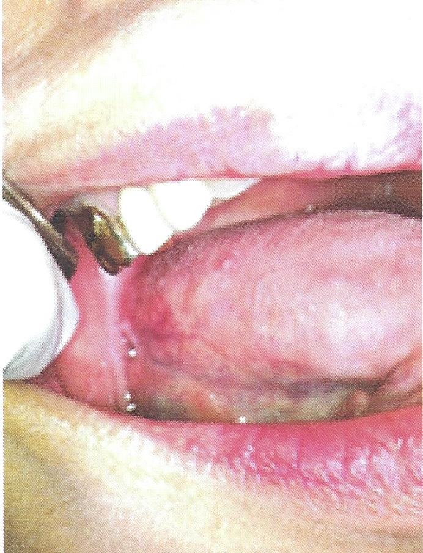

Lingual tonsil

ต่อมทอนซิลโคนลิ้น
พบเป็นรอยนูนขนาดเล็กสีแดง เมื่อมีการอักเสบ จะขยายขนาดและมีอาการเจ็บปวด
การรักษา กำจัดการอักเสบ อาการจะหายไป หากไม่หาย ควรตรวจเพิ่มเติม เนื่องจากมีโอกาสเป็นมะเร็งช่องปากได้